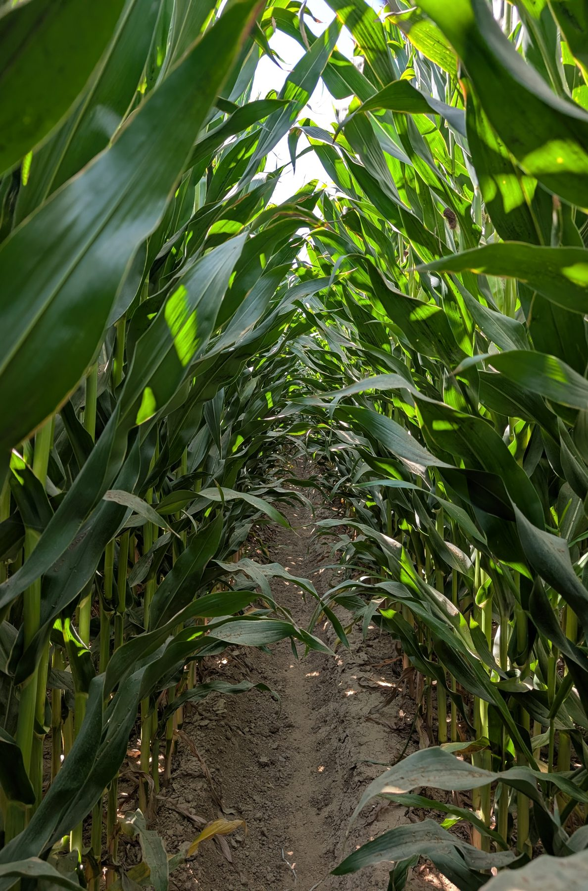
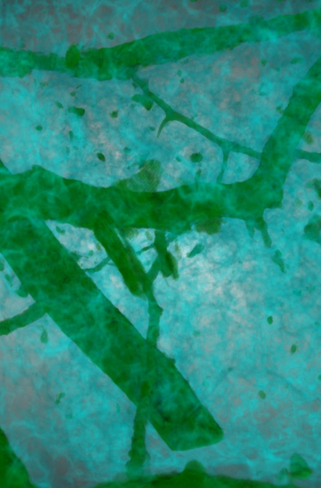
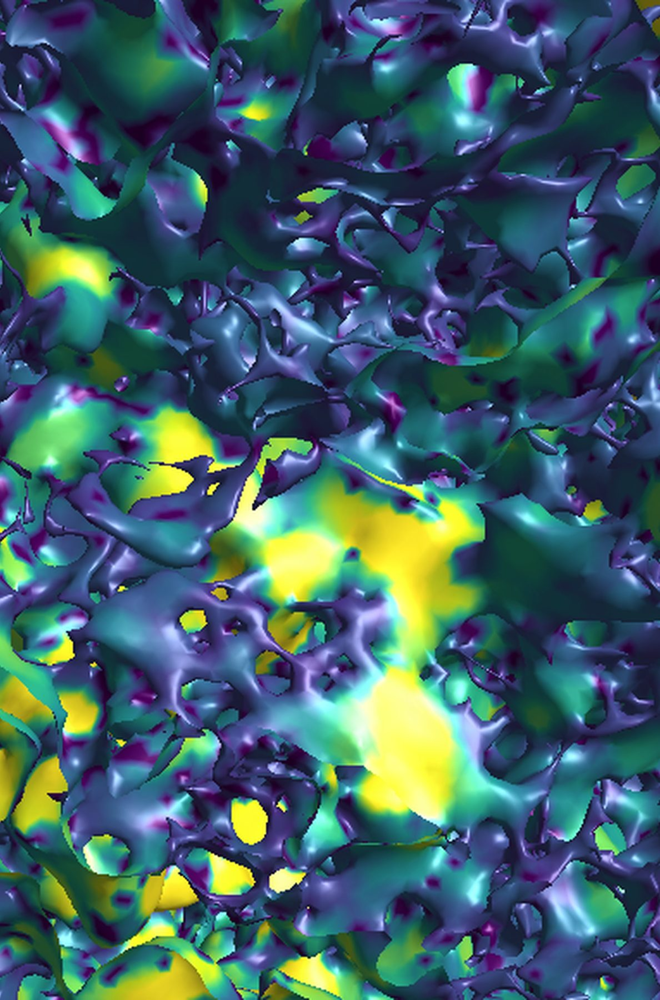
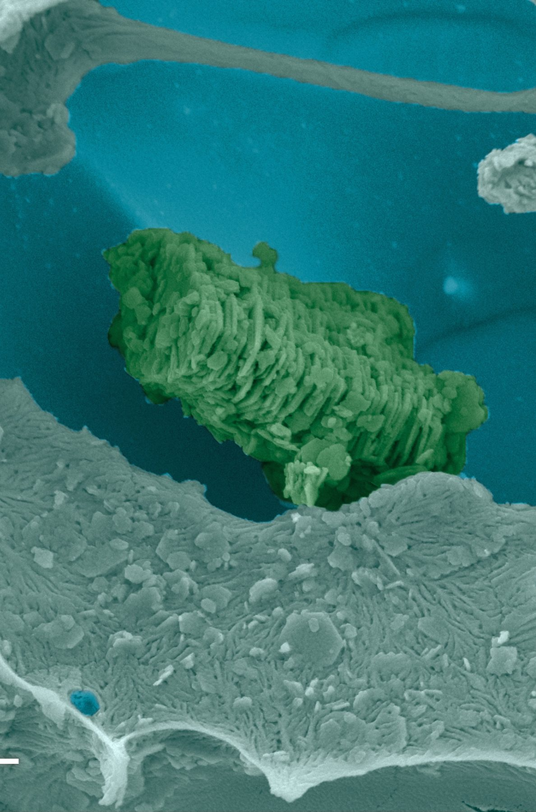
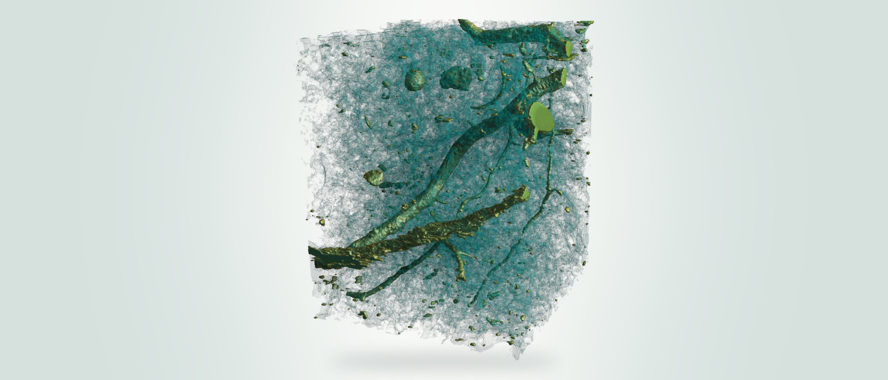
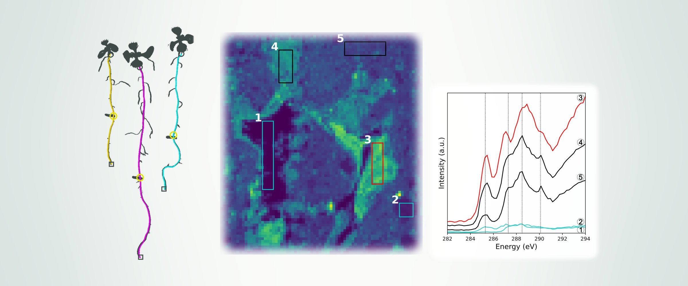

Structure shapes function — from pores to ecosystems

How changing precipitation affects soil structure, rhizosphere processes, and carbon storage.

How do plants regulate root foraging in soil pore structure, and how does this affect carbon persistence?
How do pore size, geometry, and connectivity shape where bacteria live and how active they are?